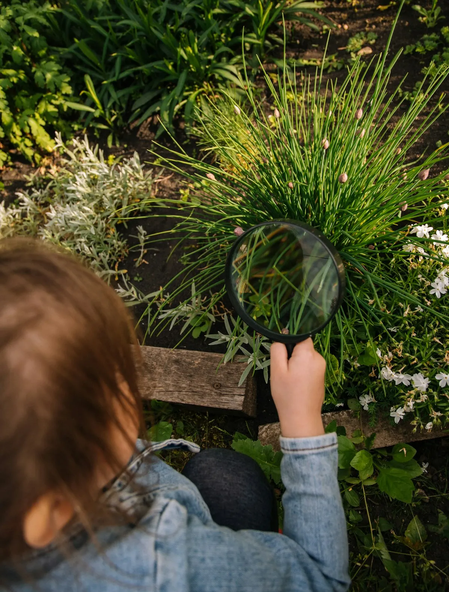
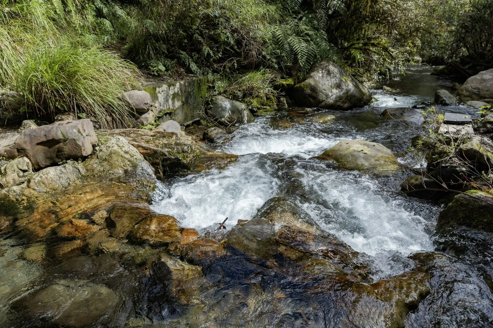
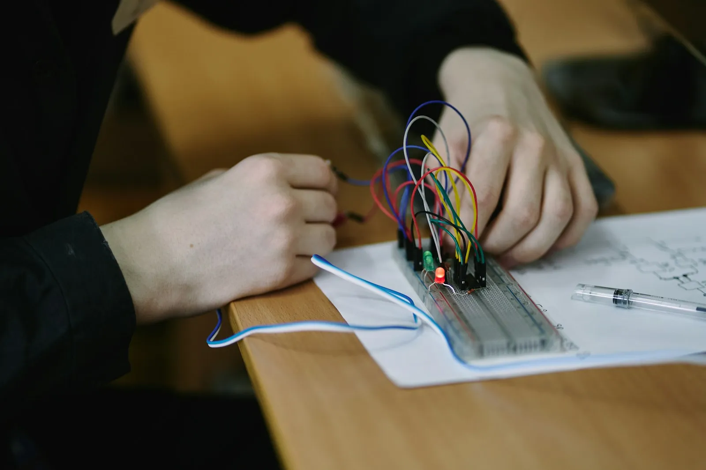

Claire Donnelly
I teach middle school science. For six years I tested Portland's rivers for a living. Now I help seventh graders do it, and argue about what they found.
Teaching
Science, grades 6–8
Based in
Portland, Oregon
License
Oregon, Integrated Science and Biology
How I teach
Kids learn science by doing what scientists do.
Three habits run through every unit I teach, from the first week of September to the last lab in June.

Start with a real question
Every unit opens with something local. Is the creek behind school healthy? Why did the bean plants by the window win?
Measure, then argue
Students collect their own data and defend a claim with it. They keep notebooks, not worksheets, so I can see their thinking change across the year.
Everyone does the science
Lab roles rotate, instructions come in words and pictures, and English learners get sentence frames for every discussion.
From my classroom
Three units I planned and taught in my student-teaching year. Student work is shared with permission, and never with faces.

Grade 7 · 4 weeks
Is Johnson Creek healthy?
Students tested temperature, pH and dissolved oxygen at the creek behind school, counted mayfly larvae, and presented their verdict to the local watershed council.
See the unit →Grade 7 · 3 weeks
Cells, up close
Everyone made their own slides of onion skin and cheek cells, then drew what they saw to scale.
See the unit →
Grade 6 · 2 weeks
A door alarm from scratch
Pairs wired a circuit that buzzes when a door opens, then redrew it as a diagram. Every pair got theirs working, most on the third try.
See the unit →Experience
Claire's students asked better questions in May than in September, and she had their notebooks to prove it.
Dana WhitakerMentor teacher, Cedar Hollow Middle School
2025–2026
Student teacher, 7th-grade life science
Cedar Hollow Middle School, Portland
A full-year placement: five sections, 142 students. I planned and taught the creek study, cells and ecosystems units.
2024–2025
Substitute teacher, grades 6–8
Three Portland-area districts
2017–2023
Water quality field technician
Environmental consultancy, Portland
Six years sampling rivers and creeks and writing the reports. It is where the creek unit came from.
License
Oregon Preliminary Teaching License
Integrated Science (middle level) and Biology endorsements
Education
Master of Arts in Teaching, 2026
Secondary science. BS Environmental Science, 2017